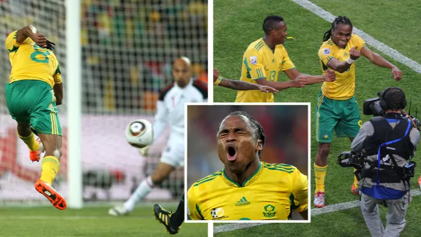
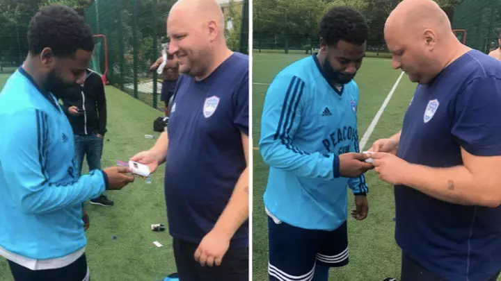

Football
Marcus Rashford Is More Than Just A Footballer. He's A Role Model For People Of All Ages.
He has used his position to make a difference.
a month ago

Football
What Happened To Siphiwe Tshabalala: The Man Who Shocked The World At The 2010 World Cup.
Ten years on, we spoke to the man himself about 'that' goal, a move to England that almost happened and a special chat with...
a month ago

Football
Sunday League Manager Invests In Card Machine To Keep On Top Of Match Fees.
No excuses.
2 months ago